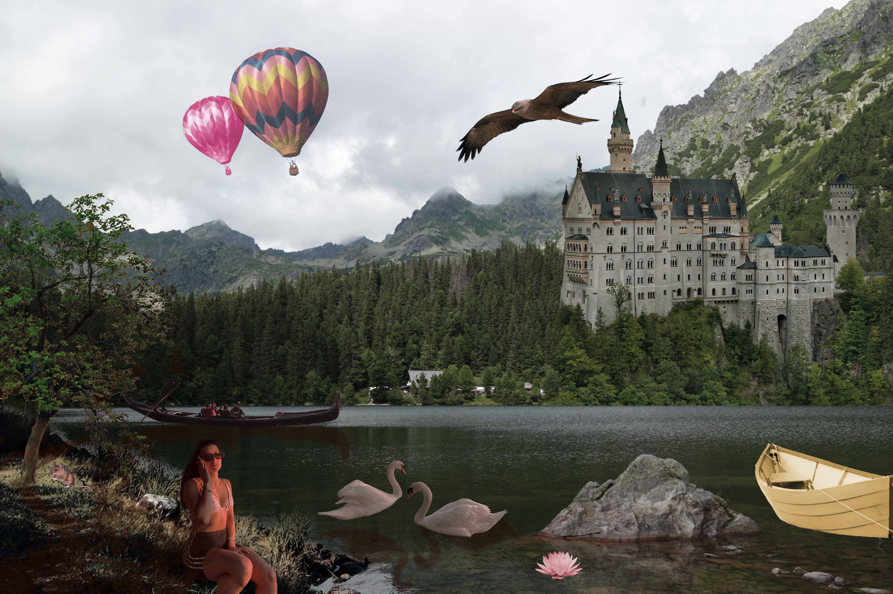

Druga vježba. U ovoj vježbi bavili smo se Bezierovim krivuljama. Zadatak je bio koristeći vlastiti font preko krivulja napisati inicijale ime i prezimena, te od njega napraviti masku.
Treća vježba. Uvod u Illustrator. U ovoj vježbi izradili smo svoju vlastitu grupu boja, te smo pomoću slike koju smo uveli u dokument nacrtali objekt. Koristili smo transparenciju, rad sa slojevima, grupiranje objekata.
Prvi projektni zadatak u Illustratoru. Tema je bila "Flora i fauna podmorja". Dobili smo zadatak gdje smo morali do sad sve naučene tehnike primjeniti u zadatku određen broj puta.
U prvom zadatku iz Photoshopa bavili smo se tehnikama retuširanja fotografija. Na fotografijama smo uklanjali pjegice pomoću naučenih tehnika retuširanja, također smo dodali dio kose.
.jpg)
Koloriranje
U ovoj vježbi morali smo na crno-bijeloj fotografiji pomoću selekcije, maske, kanala boja dodati biju određenim elementima. Za drugi dio vježbe iskoristili smo vlastitu fotografiju na kojoj smo po istom principu promijenili boje.
Sedma vježba-Fotomontaža. Dobili smo ponuđene fotografije koje smo trebali sklopiti u jednu da izgleda što realnije.Najvažnije je kvalitetno selektirati dijelove koje želimo izrezati kako bi se što bolje uklopilo u finalnu sliku
Drugi projektni zadatak.Također smo trebali iskoristiti sve naučene tehnike u programu Photoshop. Koristili smo svoje fotografije, kao i ponuđene. Fotografiju smo trebali napraviti što realističnije pomoću sjena i tehnika fotomontaže.
.gif)
.gif)
Osma vježba-Kinematograf. Vježbu smo radili u programu Premier pro. Zadatak je bio izraditi dva gif-a od kojih smo jedan sami snimili te ga obradili kao kinemagraf. Osim programa Premier koristili smo i Photoshop.
Deveta vježba-Obrada videa, zvuka i teksta. U ovoj vježbi dobili smo zadane klipove koje smo u programu Premier pro morali sklopiti u jedan video.Zadatak je također bio izraditi vlastiti video dodati mu efekte te jedan statični i pomični tekst.